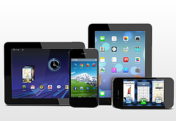
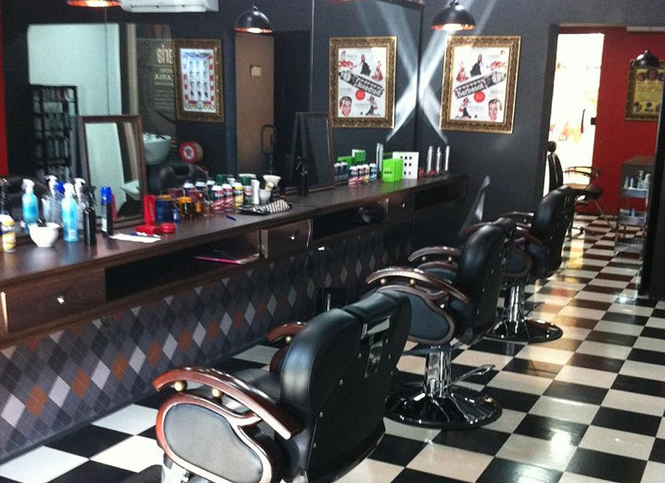

Bem-vindo ao SincovelApp

Primeiro aplicativo para mobile exclusivo para você e seu parceiro de negócio. Ele terá funções exclusivas criadas para impressionar você!
Ficou curioso? Veja mais.
Na palma da sua mão

Acessível com qualquer smartphone, Android, Windows e Apple, além de qualquer tablet.
Veja o que você pode fazer!
Rápido e Prático

Acesse todos seus serviços e consulte informações de sua parceria. Faça sugestões e crítcas,
vamos juntos criar o melhor App da sua vida!
Vamos começar?